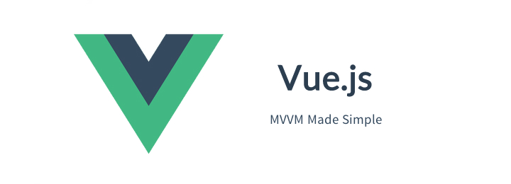

年前就打算学习并总结一下vue2.x，但是因为年前工作比较多，所以进展十分缓慢，现在终于学了一大部分，而且自己在学习开发中也踩了不少坑也总结了不少，所以将自己踩过的坑总结一下分享出来。因为在项目中使用了webpack2.x，所以对于webpack2.x也有一个踩坑总结，点击链接。
项目地址：https://github.com/MrZhang123/Vue_project/tree/master/vue2.x
vue2.x
1.独立构建vs运行时构建
在按照vue1.0的配置配置好webpack后，会出现Failed to mount component: template or render function not defined. (found in root instance) 的错误，这里涉及到vue2.0与vue1.0的第一个不同的地方。具体区别独立构建 vs 运行时构建。解决方法为在webpack配置文件中添加如下配置项：
resolve: {
alias: {
'vue$': 'vue/dist/vue.common.js'
}
}
2.挂载点的选择
在原来的vue1.0的项目中我使用body元素作为挂载点，但是在vue2.0中，如果使用body或者html作为挂载点，则会报以下警告：Do not mount Vue to <html> or <body> - mount to normal elements instead.
在vue1.0中允许开发者以body或者html作为根实体的挂载点，但是到了2.0后，只能通过独立的节点挂载，例如：div等，否则报警告
3.动态组件渲染（跟1.x类似）
多个组件可以使用同一个挂载点，然后动态地在它们之间切换。使用保留的
<!-- 动态组件由 vm 实例的属性值 `componentId` 控制 -->
<component :is="componentId"></component>
<!-- 也能够渲染注册过的组件或 prop 传入的组件 -->
<component :is="$options.components.child"></component>
keep-alive
如果把切换出去的组件保留在内存中，可以保留它的状态或避免重新渲染。为此可以添加一个 keep-alive 指令参数：
<keep-alive>
<component :is="currentView">
<!-- 非活动组件将被缓存！ -->
</component>
</keep-alive>
4.ref
有时候需要直接在父组件中访问子组件实例，或者直接操作DOM元素，此时需要使用ref。
ref被用来给元素或子元素注册引用信息。引用信息会根据父组件的$refs对象进行注册。如果在普通的DOM元素上使用，引用信息就是元素，如果用在子组件上，引用信息就是组件实例。
<!-- vm.$refs.p will be the DOM node -->
<p ref="p">hello</p>
<!-- vm.$refs.child will be the child comp instance -->
<child-comp ref="child"></child-comp>
当 v-for 用于元素或组件的时候，引用信息将是包含DOM节点或组件实例数组。
关于ref注册时间的重要说明: 因为ref本身是作为渲染结果被创建的，在初始渲染的时候你不能访问它们 - 它们还不存在！$refs 也不是响应式的，因此你不应该试图用它在模版中做数据绑定。
5.自定义事件
在vue自定义事件使用$on与$emit，前者用于触发监听，后者用于触发，监听可以有两种方式
<!--使用v-on在html中监听-->
<my-component v-on:test="callbackFun"></my-component>
<script>
//直接用$on监听
vm.$on('text',function(){})
</script>
6.组件命名的约定
当注册组件（或者 props）时，可以使用 kebab-case ，camelCase ，或 TitleCase
// 在组件定义中
components: {
// 使用 kebab-case 形式注册
'kebab-cased-component': { /* ... */ },
// register using camelCase
'camelCasedComponent': { /* ... */ },
// register using TitleCase
'TitleCasedComponent': { /* ... */ }
}
在 HTML 模版中，只能使用 kebab-case 形式：
<!-- 在HTML模版中始终使用 kebab-case -->
<kebab-cased-component></kebab-cased-component>
<camel-cased-component></camel-cased-component>
<title-cased-component></title-cased-component>
当使用字符串模式时可以使用 camelCase 、 TitleCase 或者 kebab-case 来引用：
<!-- 在字符串模版中可以用任何你喜欢的方式! -->
<my-component></my-component>
<myComponent></myComponent>
<MyComponent></MyComponent>
7.子组件中使用this
有时候子组件简单，可以在父组件中直接注册，此时在子组件内使用this就是子组件实例并不是父组件，例如：
export default{
data(){
return{
parentMsg:'hello!'
}
},
components:{
child:{
props:['inputMessage'],
template:'<span>{{inputMessage}}</span>'
},
'child-secound':{
props:['inputMessage'],
template:'<span>{{upperCase}}</span>',
computed:{
upperCase(){
return this.inputMessage.toUpperCase();
}
}
}
}
}
8.key的使用
一般情况下，vue在渲染完成后，如果数据发生变化，只会重新渲染数据，不会重新渲染整个元素，但是有时候我们需要元素被重新渲染，此时就需要使用key关键字，使用v-bind绑定key关键字，可以实现在数据发生变化时候重新渲染整个元素。**注：**同一父级元素下所有子元素如果都要在数据变化后重新渲染元素，则需要被绑定的key
9.v-move的使用
在使用<transition-group>时候，不仅可以定义进入离开动画，还可以使用新增的v-move特性，与过渡一样，默认为v-move，可以用name进行自定义前缀，也可以用move-class属性手动设定。用了这个之后就可以实现移动过程中的动画。
10.跳过css检测
对于只使用js过度的元素使用v-bind:css="false"跳过vue对css的检测。
render函数的使用
createElement接受三个参数：
-
{String | Object | Function}即一个HTML标签 | 组件选项 | 一个函数，必须返回上述其中一个
-
{Object}一个对应HTML标签属性的数据对象（可选）
-
{String | Array}子节点（VNode）（可选）
⚠️ 关于第三个参数的说明
- createElement第三个参数，如果是String，则类似于innerHTML，如果是Array，则可以写入一个执行函数，这个函数用于创建另一个DOM结构（而且这里如果想写入一个执行函数，必须是数组！！）
- 每个createElement只能创建一个元素，所以如果是创建多个元素相互嵌套，需要多个createElement函数相互嵌套，最后再render，这个跟原生js创建DOM元素类似
- 如果需要同时渲染多个元素，则需要在第三个参数的数组中，分别写入需要渲染的元素，此时Vue会按照数组中顺序进行渲染
完整数据对象：
{
// 和`v-bind:class`一样的 API
'class': {
foo: true,
bar: false
},
// 和`v-bind:style`一样的 API
style: {
color: 'red',
fontSize: '14px'
},
// 正常的 HTML 特性
attrs: {
id: 'foo'
},
// 组件 props
props: {
myProp: 'bar'
},
// DOM 属性
domProps: {
innerHTML: 'baz'
},
// 事件监听器基于 "on"
// 所以不再支持如 v-on:keyup.enter 修饰器
// 需要手动匹配 keyCode。
on: {
click: this.clickHandler
},
// 仅对于组件，用于监听原生事件，而不是组件使用 vm.$emit 触发的事件。
nativeOn: {
click: this.nativeClickHandler
},
// 自定义指令. 注意事项：不能对绑定的旧值设值
// Vue 会为您持续追踨
directives: [
{
name: 'my-custom-directive',
value: '2'
expression: '1 + 1',
arg: 'foo',
modifiers: {
bar: true
}
}
],
// Scoped slots in the form of
// { name: props => VNode | Array<VNode> }
scopedSlots: {
default: props => h('span', props.text)
},
// 如果子组件有定义 slot 的名称
slot: 'name-of-slot'
// 其他特殊顶层属性
key: 'myKey',
ref: 'myRef'
}
vue-router2.x
1.router-view
在vue-router2中<router-view>是最顶层的出口，渲染最高级路由匹配到组件。同样地，一个被渲染组件同样可以包含自己的嵌套<router-view>。
2.挂载
在router1.0中，挂载节点的方式为router.start()而在router2.0中使用vue自己的$mount手动挂载
3.给link添加事件
在vue-router1中使用v-link写入路由，但是在vue-router2中要使用router-link写入路由，在浏览器渲染的时候会把router-link渲染成a。
有时候需要为router-link注册事件，对于一般的html元素，直接使用@click="eventFun"即可，但是对于router-link，像普通html元素那样注册事件后并不管用，需要添加.native才会成功注册。
事实上给组件绑定原生事件就需要.native修饰v-on，否则无法注册成功。
<my-component v-on:click.native="doTheThing"></my-component>
4.利用vue-router做导航
在利用vue-router做导航的时候，需要用到redirect关键字的重定向功能，具体写法如下：
const router = new VueRouter({
routes : [
{path:'/',redirect:'/ZY'},
{path:'/ZY',component:ZY}
]
});
5.路由嵌套
vue-router的路由嵌套指的是子组件会在父组件中渲染出来，必须是子组件的父组件，祖先不可以实现，例如：
/user/foo/profile /user/foo/posts
+------------------+ +-----------------+
| User | | User |
| +--------------+ | | +-------------+ |
| | Profile | | +------------> | | Posts | |
| | | | | | | |
| +--------------+ | | +-------------+ |
+------------------+ +-----------------+